Rootopia: Depth-Resolved Root Trait Analysis for Minirhizotrons and Flatbed Scans in R
Purpose, Standard Workflow, and Extensions
Johannes Cunow
Source:vignettes/Rootopia_Overview_vignette.Rmd
Rootopia_Overview_vignette.RmdIntroduction
How deep a root system reaches decides what it can get at. Water and nitrate move down through a profile and are lost from the top of it, phosphorus stays where it is, and carbon deposited below the plow layer persists longer than carbon deposited above it, so the same total root length means different things depending on the depth it occupies (Freschet et al. 2021). A trait reported as one number per image averages exactly that away.
Roots are buried, and the two standard ways of imaging them each give up something. A flatbed scanner captures washed roots at high resolution under controlled light, which gives morphology but destroys the plant and loses the depth each root grew at. A minirhizotron keeps both the plant and the depth, by imaging soil through the wall of a transparent tube – but it returns that tube’s unrolled curved surface as a flat strip, in which pixel position is not depth. Depth has to be reconstructed from the tube’s diameter, its insertion angle and the scan resolution before any trait can be attributed to a horizon.
Finding the roots in either image is a segmentation problem, and trained models solve it well enough to be used as given: RootDetector (Peters et al. 2023) and RootPainter (Smith et al. 2022) are the two this package is built around. What they return is a mask. Turning that mask into root length density per 5 cm interval is not recognition but geometry, and it is the step at which a depth axis is either earned from measured quantities or quietly invented.
Rootopia performs that conversion and measures the traits that follow from it: root length, diameter, surface, branching architecture, network topology, turnover between sessions, and soil color and texture – each per depth interval wherever a depth map exists. The boundary matters in both directions:
-
Nothing here segments an image.
image_threshold()separates a foreground from a background by brightness alone, in either direction (invertpicks which side is kept), and can do no more than that. Roots against soil need a trained model whichever way the contrast runs; on the bundled tube scan no threshold setting separates them, which is a property of the image rather than of the code. - Every conversion after the mask is a stated rule, not a default to be inferred. Depth comes from measured geometry, lengths name their estimator, and each function names the image type it expects.
This chapter covers the three image types and what consumes them, one complete worked depth profile, and each remaining module in turn. Part I is the standard minirhizotron workflow from stitched frames to a depth profile; Part II is everything built on top of it.
The package pipeline
Most analyses run left to right through this chain. You can enter at any point and stop at any point; nothing forces you through the whole thing.
stitch -> threshold -> clean -> (rotation censor)
|
v
skeletonize ----> branching order
|
+-----> size traits (length, diameter, px)
|
v
depth map ----> root angle
|
v
distribution indicesTurnover and soil & color sit outside this chain: turnover compares two images, and soil & color works on the color channels rather than the root shape.
root_depth_metrics() is not a module. It is a batch
wrapper that runs this chain over a folder of images.
Two patterns cover everything downstream of the depth map. A trait
that reduces to a per-zone sum or mean goes through
terra::zonal() in one call. A trait whose function needs a
whole image, such as root length, goes through
depth_zoning() one bin at a time, in a loop. Both appear
below.
Part I: the standard minirhizotron workflow
This is the path almost every minirhizotron analysis takes, in order: censor the rotation, build a depth map, bin it, measure traits per bin, summarize the profile. Nothing is thinned on the fly – the segmentation and the skeleton both come from RootDetector, which is the hand-over described above, exercised. Part II then adds the modules that sit outside this path.
Stitch the frames, if there are several
Before anything else: a tube is often imaged as several overlapping
frames, and a root crossing a frame boundary would otherwise be measured
twice. If each tube is already one image, skip this.
stitch_root_scans() groups files into tubes by a pattern in
the filename, aligns consecutive frames by FFT phase correlation over a
band along the overlapping edge, and blends them into one mosaic per
tube.
# See what a folder holds, then pick a range in the same call
stitch_root_scans("path/to/scans", pattern = ".tiff", tubes = "ask")
res <- stitch_root_scans(
"path/to/scans", pattern = ".tiff",
blend = "max", # for segmented masks: never averages a root
order_by = "\\d+(?=\\.)", # sort on the frame number, not the file name
report = TRUE
)
res$report # tube | step | dx | dy | peak | overlap
res$report[order(res$report$peak), ][1:10, ] # weakest joins firstTwo settings decide whether a mosaic is usable.
blend = "max" is the one for segmented masks: a linear
feather averages, which turns a root pixel into a fractional
value and ghosts thin roots wherever alignment is off by a pixel. And
edge_width is the width of the band searched for the
overlap, not the overlap itself, so it has to be at least as wide as the
true overlap. The report’s peak column is the correlation
height at each join; sort by it to find the weak ones.
Hand the images to a segmenter
Stitched or not, the next step is not in this package. A scan has to be turned into a root mask by something trained to recognize roots, and there are three routes:
-
RootDetector (Peters et al. 2023) — a
convolutional network for minirhizotron images. Returns the segmentation
and a skeleton in one pass, and optionally the decay/production/constant
coding that
root_turnover(method = "dpc")reads. -
RootPainter (Smith et al. 2022) —
interactive training, where you correct the model as it learns. Returns
a mask; use
skeletonize_image()for the skeleton. -
Anything else that writes a binary mask. Rootopia
reads PNG, JPEG, TIFF, BMP,
terraandrasterobjects,imagerimages and plain arrays, so the format is rarely the obstacle.
Only one case does not need a trained model: a scan where root and
background differ in brightness alone. image_threshold()
compares each pixel against either a fraction of the image maximum
(method = "global") or a multiple of a local mean
(method = "adaptive"). By default it keeps the pixels at or
above that level, so the bright side is the foreground,
which fits roots on a dark tray. A flatbed scan is normally the reverse,
dark roots on a bright tray, and invert = TRUE moves the
cut to the other side of the pixel value:
# Dark roots on a bright tray.
image_threshold(scan, threshold = 0.4, method = "global",
binary_01 = TRUE, invert = TRUE)
# The adaptive form then asks that a pixel be adaptive_k times darker than its
# surroundings, rather than that much brighter.
image_threshold(scan, method = "adaptive", adaptive_k = 1.15,
window_size = 51, binary_01 = TRUE, invert = TRUE)Roots against soil cannot be separated this way whichever direction
the contrast runs — on the bundled tube scan no setting of
adaptive_k separates them, which is a property of the image
rather than of the code.
What comes back is up to three rasters per scan, and the rest of this article is about what to do with them.
The three image types
A segmenter hands back up to three rasters per scan, and they are not interchangeable.
Figures here use zoom_plot(), as the step-by-step
vignettes do. These rasters are several thousand pixels wide, and
shrinking one to fit a figure makes the graphics device drop the
one-pixel-wide roots entirely; zoom_plot() draws a
full-image overview with the magnified region outlined, plus that region
at native resolution where thin features survive. frac sets
the inset size, so the magnification is 1 / frac.
# 3-band RootDetector output; layer 2 is the root channel. All three images
# below are the same scan of the same tube, so every panel of the figure at the
# end of this part shows the same pixels.
data(seg_Oulanka2023_Session03_T067)
data(skl_Oulanka2023_Session03_T067)
data(rgb_Oulanka2023_Session03_T067)
dpi <- 150 # the scan resolution; every cm value below depends on it
# Keep the full 3-band image (0/255) for the mask and depth steps below.
seg_img <- load_flexible_image(seg_Oulanka2023_Session03_T067,
output_format = "spatrast", scale = "none")
# load_flexible_image() also selects the root channel and binarizes it to 0/1
# in one call, so pixel sums and the void mask (abs(root_layer - 1)) are
# meaningful.
root_layer <- load_flexible_image(seg_Oulanka2023_Session03_T067,
output_format = "spatrast",
scale = "binary", select_layer = 2)
# The one-pixel center line, from the same RootDetector run.
skl <- load_flexible_image(skl_Oulanka2023_Session03_T067,
output_format = "spatrast",
scale = "binary", select_layer = 2)
rgb <- load_flexible_image(rgb_Oulanka2023_Session03_T067,
output_format = "spatrast", scale = "none")
# The scan may arrive on 0-255 or 0-1 depending on how it was written; dividing
# by its own maximum puts it on 0-1 either way, which is what plotRGB expects
# with scale = 1.
rgb <- rgb / terra::global(rgb, "max", na.rm = TRUE)[[1]]Each carries different information, so each feeds different functions.
| Image | What it is | What it is for |
|---|---|---|
| RGB | the photograph | color, texture, soil class |
| Segmentation | solid root mask, 0/1 | area, diameter, cleaning |
| Skeleton | one-pixel center line | length, tips, branching |
RootDetector returns all three. RootPainter returns a mask, and
skeletonize_image() thins it, so a missing skeleton is
never a blocker.
Which image feeds which function
This is the table to keep. Passing the wrong type usually gives a wrong number rather than an error.
| Function | Needs | Note |
|---|---|---|
count_pixels() |
segmentation | area, not length |
root_length() |
skeleton |
skeletonize = TRUE thins a mask first |
branch_order_map() |
both | also where tips and forks come from |
root_diameter() |
both | mask for widths, skeleton for where |
network_metrics() |
segment table | from branch_order_map()$edges
|
root_transport() |
segment table | needs diameters, so needs mask =
|
root_scape_metrics() |
segmentation | patch structure of solid root (needs landscapemetrics) |
create_depthmap() |
any raster | reads the grid, not the values |
tube_coloration() |
RGB | three bands required |
classify_soil_rgb() |
RGB | per-pixel material class |
analyze_soil_texture() |
RGB | GLCM texture (needs glcm) |
root_turnover() |
two scans, or one DPC | per tc_method
|
root_diameter() is the one to
understand. Diameter comes from a distance transform of the
solid mask: every root pixel is labeled with its distance to
the nearest background pixel, which is the radius of the largest circle
that fits inside the root there, and diameter is twice that. The
skeleton then says which of those pixels to report, so each
root contributes its center line once rather than its whole width. Pass
only a skeleton and every diameter collapses to about one pixel. The
same applies to mask = in the branching functions, where
the continuation rule and the order-1 seed both depend on diameter.
Censor the rotation
A tube can turn between sessions, and the scanner does not cover a full circle, so roots near the edge of the scan are visible in one session and not the next. Left alone that is a systematic bias which looks like growth or death. Cropping every session to a common window of rows removes it, and it is standard procedure rather than an option.
# Center the window on the tube's rotational zero. estimate_rotation_center()
# finds it from the tape on the tube's upper side, once per tube; here the
# image midpoint stands in for it, so this article needs no extra packages.
r0 <- round(dim(root_layer)[1] / 2, 0)
censored <- rotation_censor(
root_layer,
center_offset = r0,
cut_buffer = 0.02,
fixed_width = 900, # rows kept; must fit inside the image height
fixed_rotation = TRUE, # equal width across sessions is what makes
overlay = TRUE, # counts comparable
main = "Rotation censor: kept (green) vs cut (red)"
)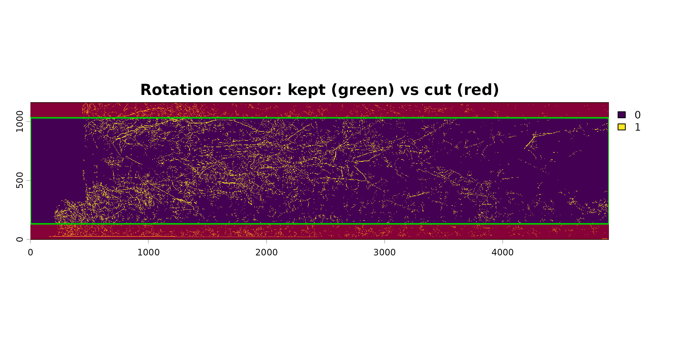
fixed_rotation = TRUE forces exactly
fixed_width rows, which is what you want when comparing
sessions: equal width is what makes counts comparable.
fixed_rotation = FALSE instead cuts in proportion to a
measured offset, so the output width varies between images.
estimate_rotation_shift() measures that offset between two
sessions by phase or cross correlation.
The rest of this article works on the uncensored image, so the depth figures cover the full circumference.
Depth, from geometry
depth_map <- create_depthmap(
img = root_layer,
geometry = "tube", # "window" planar, "flat" no depth axis
tube_thicc = 7, # cm - measure your own tube
angle_from_vertical = 45, # degrees from vertical; 0 is upright
dpi = dpi,
start_soil = 2.9, # cm - from in-situ calibration
center_offset = 0.5 # tube top halfway down the image
)
terra::plot(depth_map, main = "Depth map (cm)")
Four measured quantities set this map, and each fails in its own way.
angle_from_vertical is read from vertical, so 0 is an
upright tube and 90 a horizontal one. tube_thicc is the
inner diameter; if it or dpi is wrong the curvature wave
cannot span the image and the function stops with
Wrong Tube Diameter. start_soil is in
centimeters and is subtracted from every depth, so an error in it shifts
the whole profile by that amount and changes nothing else.
center_offset rotates the curvature wave to where the top
of your tube sits, as a fraction of one circumference.
Depth also runs along the image width. A scan with the soil surface at the top needs a quarter turn first; nothing errors if it is the wrong way round, the map is simply built along the wrong axis.
Insertion angle and the depth map
The angle is not a scaling factor. It splits a tube’s depth between
two axes: depth gained along the tube’s length, and depth spread around
its circumference. Leaning the tube over trades one for the other, and
with geometry = "tube" both terms are visible in the same
map.
# A 7 cm tube over 25 cm of its length: depth runs along the width, the
# circumference down the height, as in a real scan.
tube <- 7; sdpi <- 60
nr <- round(tube * pi * sdpi / 2.54, 0) - 1 # one full turn
demo <- terra::rast(matrix(0, nrow = nr,
ncol = round(25 * sdpi / 2.54, 0)))
# Axes in centimeters rather than pixels, so the two directions can be read
# against each other.
terra::ext(demo) <- c(0, 25, 0, tube * pi)
angs <- c(15, 45, 75)
maps <- lapply(angs, function(a)
create_depthmap(demo, geometry = "tube", tube_thicc = tube,
angle_from_vertical = a, dpi = sdpi, center_offset = 0))
lims <- range(vapply(maps, function(m) terra::minmax(m)[, 1], numeric(2)))
op <- graphics::par(mfrow = c(3, 1))
for (i in seq_along(angs))
terra::plot(maps[[i]], range = lims, maxcell = Inf,
xlab = "along the tube (cm)",
ylab = "around the tube (cm)",
main = sprintf("%d deg from vertical", angs[i]))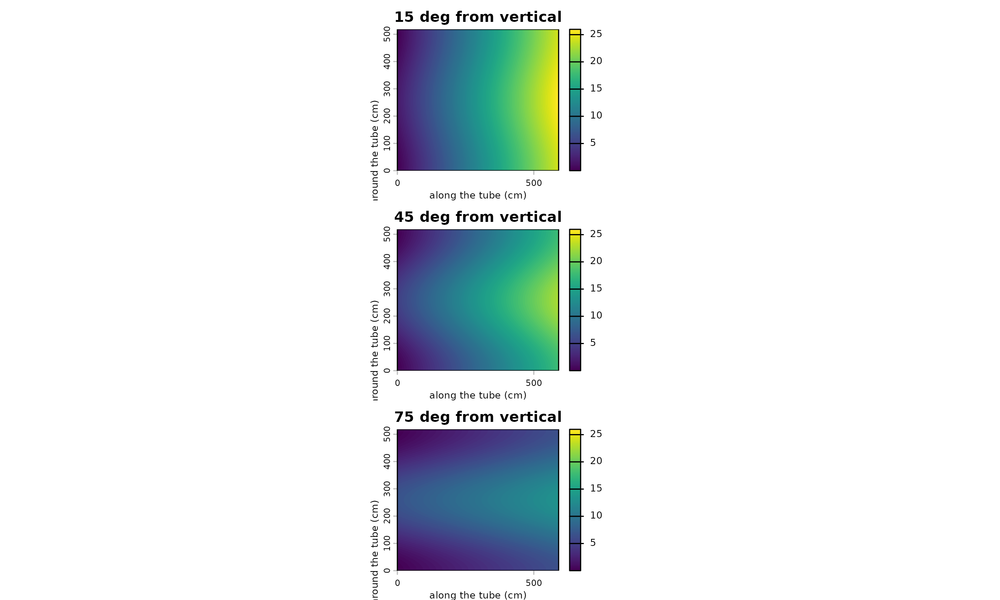
graphics::par(op)Measuring the two terms off the function needs one more thing: a length of tube to measure the depth gain over. Taking 7 cm of tube, the same as the diameter, makes the two terms two halves of one budget.
budget <- terra::rast(matrix(0, nrow = nr,
ncol = round(tube * sdpi / 2.54, 0)))
ang_seq <- seq(0, 90, by = 5)
terms <- vapply(ang_seq, function(a) {
m <- terra::as.matrix(
create_depthmap(budget, geometry = "tube", tube_thicc = tube,
angle_from_vertical = a, dpi = sdpi, center_offset = 0),
wide = TRUE)
c(circ = diff(range(m[, 1])), len = diff(range(m[1, ])))
}, numeric(2))
op <- graphics::par(mar = c(4, 4, 2, 1))
plot(ang_seq, terms["circ", ], type = "l", lwd = 2, col = "coral3",
ylim = c(0, max(terms)), xlab = "angle from vertical (deg)",
ylab = "depth spanned (cm)")
graphics::lines(ang_seq, terms["len", ], lwd = 2, col = "steelblue4")
graphics::abline(v = 45, col = "grey70", lty = 3)
graphics::legend("top", bty = "n", lwd = 2, cex = 0.8,
col = c("steelblue4", "coral3"),
legend = c("along 7 cm of tube length",
"around a 7 cm tube"))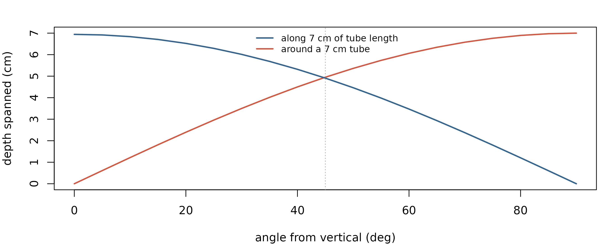
graphics::par(op)Both curves are depth spanned in centimeters over the same 7 cm of tube: 7 cm around the circumference, 7 cm along the length. That makes them two halves of one budget. They cross at 45 degrees at the same value, 4.95 cm, and at either end one of them holds all 7 cm while the other holds none.
Near upright, almost all of the depth is the left-to-right gradient
along the tube and the circumference sits at nearly one depth, so the
banding is faint. Near horizontal it is the reverse: the banding spans a
full tube diameter while the length gradient flattens. The two curves
cross at 45 degrees, the angle most minirhizotron work uses and the one
angle at which the two terms cannot be told apart. With
geometry = "window" the circumference term is dropped and
only the length term remains; with "flat" both go, and
every pixel shares one depth.
Bin the depths
depth_bins <- binning(depthmap = depth_map, nn = 5, round_option = "floor")
depths <- sort(unique(terra::values(depth_bins, mat = FALSE)))
depths <- depths[!is.na(depths) & depths >= 0]
depths
#> [1] 0 5 10 15 20 25 30 35 40 45 50 55 60
terra::plot(depth_bins, main = "Depth bins")
round_option = "floor" gives the soil-science
convention: the bin labeled 5 spans 5-10 cm and every bin is the full
nn wide. The default, "rounding", labels a bin
by its center, so the bin labeled 0 spans -2.5 to +2.5 cm and is half
width once negative depths are dropped. Per-bin densities are unaffected
either way, because they divide by each bin’s own measured area, but any
total that multiplies a per-bin value by nn is biased by
that half-width bin.
Traits per depth bin
Pixel counts reduce to a per-zone sum, so the whole profile comes out of one call.
root_px <- terra::zonal(root_layer, depth_bins, "sum", na.rm = TRUE)
void_px <- terra::zonal(abs(root_layer - 1), depth_bins, "sum", na.rm = TRUE)
colnames(root_px) <- c("depth", "rootpx")
colnames(void_px) <- c("depth", "voidpx")
depth_data <- merge(root_px, void_px, by = "depth")
depth_data <- depth_data[depth_data$depth >= 0, ]
depth_data$area_cm2 <- (depth_data$rootpx + depth_data$voidpx) *
(2.54 / dpi)^2
head(depth_data, 4)
#> depth rootpx voidpx area_cm2
#> 2 0 10203 432006 126.7980
#> 3 5 58108 426762 139.0305
#> 4 10 50946 433824 139.0019
#> 5 15 47220 437614 139.0202Root length does not reduce that way. Kimura’s estimator needs a whole skeleton, and it is not additive: the depth bins do not add up to the whole-image value. That is correct for a non-linear estimator rather than a leak, and it is why the trait is computed one bin at a time.
length_by_depth <- do.call(rbind, lapply(depths, function(d) {
skl_d <- depth_zoning(skl, depth_map = depth_bins, depth = d)
data.frame(depth = d,
rootlength = root_length(skl_d, unit = "cm", dpi = dpi,
show_messages = FALSE))
}))
depth_data <- merge(depth_data, length_by_depth, by = "depth")
depth_data$rootlength.density <- depth_data$rootlength / depth_data$area_cm2
head(depth_data, 4)
#> depth rootpx voidpx area_cm2 rootlength rootlength.density
#> 1 0 10203 432006 126.7980 47.26035 0.3727215
#> 2 5 58108 426762 139.0305 232.97663 1.6757226
#> 3 10 50946 433824 139.0019 194.66974 1.4004829
#> 4 15 47220 437614 139.0202 187.38270 1.3478808Diameter needs both images at once: the mask gives the width, the
skeleton says which pixels to report. root_diameter()
returns the local thickness across the whole scan as well as the
per-skeleton-pixel diameters, so it is worth looking at before reducing
it to a per-interval mean.
diam_result <- root_diameter(
root_layer,
skeleton_img = skl,
unit = "cm",
dpi = dpi, # not optional: the default is 300
select_layer = NULL
)
# root thickness
zoom_plot(diam_result$distance_map_rast, frac = 0.1)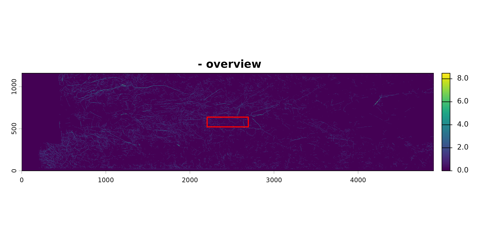
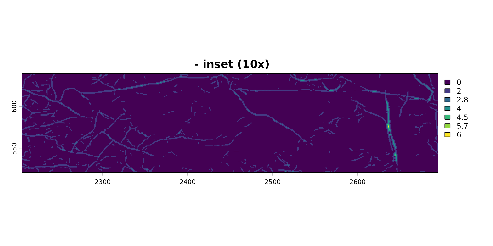
Diameter is a per-pixel value, so it reduces with
zonal() like the counts, once its raster is snapped onto
the depth grid.
terra::ext(diam_result$diameter_rast) <- terra::ext(depth_bins)
diam_by_depth <- terra::zonal(diam_result$diameter_rast, depth_bins,
"mean", na.rm = TRUE)
colnames(diam_by_depth) <- c("depth", "avg.diameter")
depth_data <- merge(depth_data, diam_by_depth, by = "depth")
head(depth_data, 4)
#> depth rootpx voidpx area_cm2 rootlength rootlength.density avg.diameter
#> 1 0 10203 432006 126.7980 47.26035 0.3727215 0.03560018
#> 2 5 58108 426762 139.0305 232.97663 1.6757226 0.03746447
#> 3 10 50946 433824 139.0019 194.66974 1.4004829 0.03735308
#> 4 15 47220 437614 139.0202 187.38270 1.3478808 0.03611764Profile summaries
# Mean rooting depth - depth-weighted mean
ok <- depth_data[!is.na(depth_data$rootlength.density) &
depth_data$rootlength.density > 0, ]
mrd_val <- MRD(w = ok$depth, roots = ok$rootlength.density)
total_ld <- sum(depth_data$rootlength.density * 5, na.rm = TRUE)
cat(sprintf("MRD: %.2f Total length density: %.4f\n", mrd_val, total_ld))
#> MRD: 20.64 Total length density: 46.6096MRD() stops on NA, on negative root values,
and on an all-zero profile rather than returning a number built from
part of the data, which is why the profile is filtered first and the
filtering stays visible.
library(ggplot2)
ggplot(depth_data, aes(x = depth, y = rootlength.density)) +
geom_col(fill = "steelblue4") +
coord_flip() +
scale_x_reverse() +
theme_minimal() +
labs(x = "Soil depth (cm)", y = "Root length density (cm / cm2)",
title = "Root length density profile")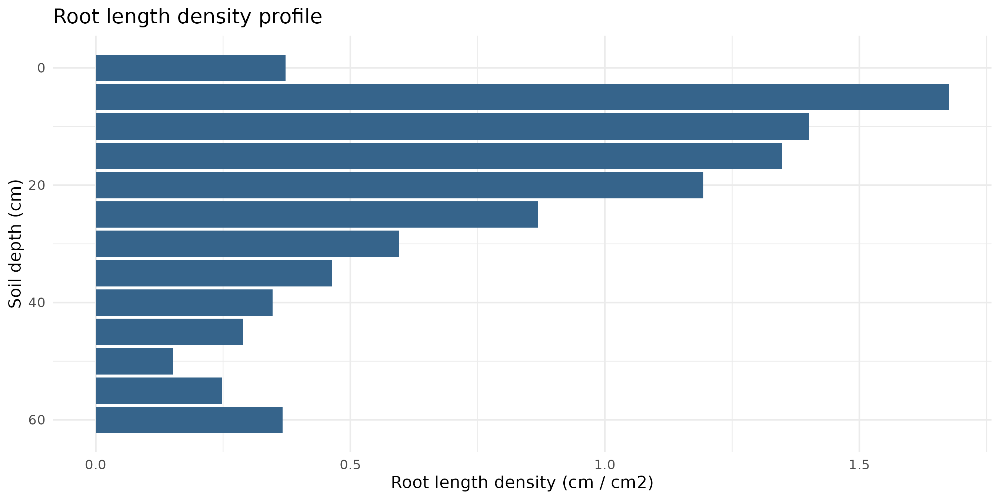
depth_data$Tube <- "T067"
depth_data$rootpx.cumulative <- root_accumulation(
depth_data,
group = "Tube",
depth = "depth",
variable = "rootpx",
stdrz = "additive" # "counts" (raw), "additive" (/max), "relative" (/sum)
)
ggplot(depth_data, aes(x = depth, y = rootpx.cumulative)) +
geom_line(color = "steelblue4") +
geom_point(color = "steelblue4") +
theme_minimal() +
labs(x = "Depth (cm)", y = "Cumulative root pixel fraction",
title = "Root accumulation with depth")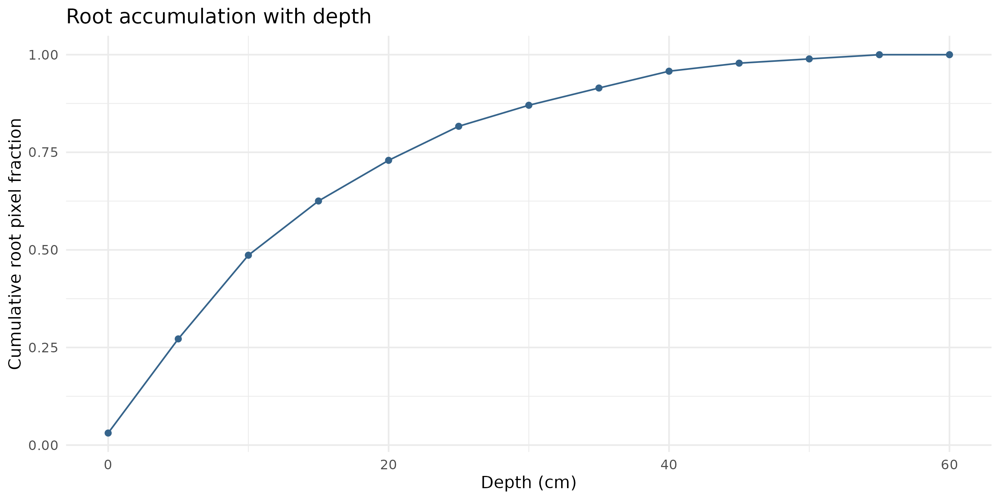
stdrz picks the denominator and only one option ends at
1. "additive" divides the cumulative curve by its own
maximum, so curves from tubes with very different total abundance
compare by shape alone. "counts" is the raw cumulative sum,
and "relative" divides by the sum of the cumulative values,
which is a different scale.
The whole workflow in one figure
Each step above produced a raster on the same grid, so they can be laid side by side: the scan, what the segmenter found in it, the center lines, the local thickness, the depth the geometry assigns to each pixel, and the profile those five produce. Depth runs along the image width, so a quarter turn puts it down the page and the panels stand next to each other.
rot <- function(r) {
r <- terra::flip(terra::t(r), direction = "horizontal")
terra::ext(r) <- c(0, ncol(r), 0, nrow(r))
r
}
# Aggregating to about the on-page pixel count first means terra never drops
# pixels while drawing, which is what loses one-pixel-wide roots.
shrink <- function(r, fun) terra::aggregate(rot(r), fact = 4, fun = fun,
na.rm = TRUE)
# Root area and skeleton in one raster: 0 background, 1 root, 2 center line.
skl_cls <- root_layer
terra::ext(skl_cls) <- terra::ext(skl)
skl_cls[skl == 1] <- 2
# distance_map_rast is the local diameter in pixels across the whole mask, so
# the thickness is already spread over the root rather than sitting on the
# center line. Pixels to millimeters: px * 2.54 / dpi * 10.
diam_mm <- diam_result$distance_map_rast * 2.54 / dpi * 10
diam_mm[diam_mm <= 0] <- NA
p_rgb <- terra::aggregate(rot(rgb), fact = 4, fun = "mean", na.rm = TRUE)
p_root <- shrink(root_layer, "max")
p_skl <- shrink(skl_cls, "max")
p_diam <- shrink(diam_mm, "max")
p_depth <- shrink(depth_bins, "mean")
area_ramp <- grDevices::colorRampPalette(c("black", "#2E7DD1"))(100)
skel_cols <- c("black", "#2E7DD1", "#FF5A36")
diam_cols <- grDevices::colorRampPalette(c("#f5e07a", "#80066b"),
space = "Lab")(100)
band_cols <- grDevices::colorRampPalette(
c("#FFD92F", "#66BD63", "#00A6CA", "#2455A4"))(length(depths))
diam_rng <- stats::quantile(terra::values(p_diam, mat = FALSE),
c(0.02, 0.98), na.rm = TRUE)
op <- graphics::par(mfrow = c(1, 6), mar = c(0.4, 0.4, 2.2, 0.4))
terra::plotRGB(p_rgb, r = 1, g = 2, b = 3, scale = 1, axes = FALSE,
mar = c(0.4, 0.4, 2.2, 0.4))
graphics::mtext("Scan", side = 3, line = 0.5)
terra::plot(p_root, col = area_ramp, range = c(0, 1), legend = FALSE,
axes = FALSE, maxcell = Inf, mar = c(0.4, 0.4, 2.2, 0.4))
graphics::mtext("Segmentation", side = 3, line = 0.5)
terra::plot(p_skl, breaks = c(-0.5, 0.5, 1.5, 2.5), col = skel_cols,
legend = FALSE, axes = FALSE, maxcell = Inf,
mar = c(0.4, 0.4, 2.2, 0.4))
graphics::mtext("Skeleton", side = 3, line = 0.5)
terra::plot(p_diam, col = diam_cols, range = as.numeric(diam_rng),
plg = list(title = "mm", cex = 0.6), axes = FALSE, maxcell = Inf,
mar = c(0.4, 0.4, 2.2, 0.4))
graphics::mtext("Diameter", side = 3, line = 0.5)
terra::plot(p_depth, col = band_cols, plg = list(title = "cm", cex = 0.6),
axes = FALSE, maxcell = Inf, mar = c(0.4, 0.4, 2.2, 0.4))
graphics::mtext("Depth bins", side = 3, line = 0.5)
graphics::par(mar = c(4, 4, 2.2, 1))
plot(depth_data$rootlength.density, depth_data$depth, type = "o", pch = 16,
ylim = rev(range(depth_data$depth)), col = "#2455A4",
xlab = expression("cm cm"^-2), ylab = "depth (cm)")
graphics::mtext("Profile", side = 3, line = 0.5)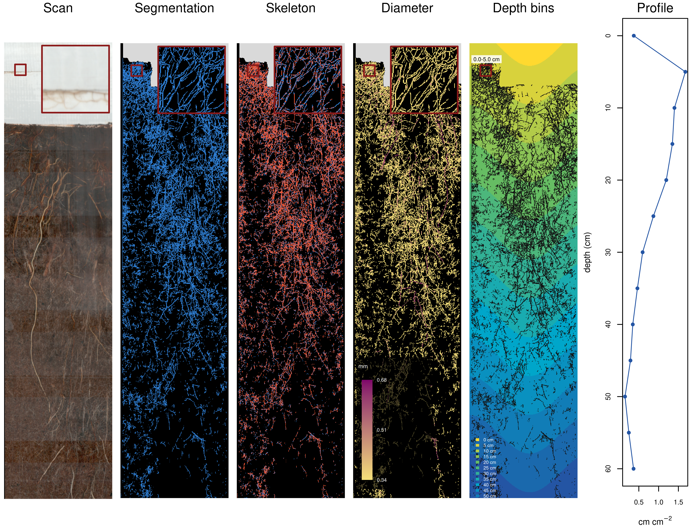
graphics::par(op)The last panel is the point of the other five. Everything to its left is an image; it is the only one with a soil depth axis, and it is what the rest of this article compares between tubes, between sessions and between treatments.
The same profile over a folder
result <- root_depth_metrics(
path_seg = "scans/segmented/2023_06/",
path_skl = "scans/skeleton/2023_06/",
tube_names = ids, # one unique id per file
dpi = 150,
geometry = "tube",
insertion_angles = 45, # degrees from vertical
tube_diameter_cm = 7,
soil_starts = 2.9, # cm
depth_interval_cm = 5,
bin_round = "floor",
session = "2023_06"
)path_skl is optional; left out, skeletons are thinned
internally. Branching order, root angle, color and landscape metrics are
separate calc_* switches, all off by default because each
costs real time.
Part II: extensions
Part I is the standard path. Everything here sits beside it: another trait from the same scan, a second session, a different imaging geometry, or a step that comes before analysis. The order runs from closest to that path to furthest from it. Each section names the article that develops it.
Root angle
deep_drive() asks one question of a depth map and a
skeleton: what fraction of root pixels head in the direction that would
take them deeper fastest? It derives the direction each root pixel is
actually heading from a D8 flow-direction pass over the depth map,
compares it against which of the eight neighbors lies deepest, and
returns the fraction that agree.
dd <- deep_drive(DepthMap = depth_map, RootMap = skl)
cat(sprintf("deep_drive: %.3f of root pixels head the deepest way\n", dd))
#> deep_drive: 0.260 of root pixels head the deepest wayOne number between 0 and 1, so it compares across tubes. There is no
partial credit: a pixel heading 45 degrees from optimal counts the same
as one heading 180 degrees away, which makes it a measure of agreement
rather than of deviation. It needs a real depth gradient, so it means
nothing on a flatbed scan. The batch wrapper reports it as
deep_drive alongside mean.steepness.angle.
return = "all" keeps the intermediate rasters, and the
three that matter sit next to each other: the center lines the
directions are read from, the depth field that defines which way is
down, and the direction assigned to each skeleton pixel.
deep_drive() returns its maps already turned a quarter
turn, so the skeleton and the depth bins are turned to match.
dd_all <- deep_drive(DepthMap = depth_map, RootMap = skl, return = "all")
# Only downward directions occur on a tube installed at an angle, so the three
# upward classes are left transparent rather than given a color nothing uses.
ang_brk <- seq(-22.5, 337.5, by = 45)
ang_use <- c(90, 135, 180, 225, 270)
ang_cols <- rep("#00000000", 8)
ang_cols[ang_use / 45 + 1] <- c("#FFD60A", "#4D7CFF", "#3DDC84",
"#E0218A", "#00E5FF")
a_skl <- shrink(skl, "max")
a_depth <- shrink(depth_bins, "mean")
a_ang <- terra::aggregate(dd_all$angle_map, fact = 4, fun = "modal",
na.rm = TRUE)
op <- graphics::par(mfrow = c(1, 3), mar = c(0.4, 0.4, 2.2, 0.4))
terra::plot(a_skl, col = c("black", "#FF5A36"), legend = FALSE, axes = FALSE,
maxcell = Inf, mar = c(0.4, 0.4, 2.2, 0.4))
graphics::mtext("Skeleton", side = 3, line = 0.5)
terra::plot(a_depth, col = band_cols, plg = list(title = "cm", cex = 0.7),
axes = FALSE, maxcell = Inf, mar = c(0.4, 0.4, 2.2, 0.4))
graphics::mtext("Depth bins", side = 3, line = 0.5)
terra::plot(a_ang, breaks = ang_brk, col = ang_cols, legend = FALSE,
axes = FALSE, maxcell = Inf, mar = c(0.4, 0.4, 2.2, 0.4))
graphics::legend("bottomleft", bty = "n", cex = 0.8, border = NA,
fill = ang_cols[ang_use / 45 + 1],
legend = paste0(ang_use, "\u00b0"))
graphics::mtext("D8 direction", side = 3, line = 0.5)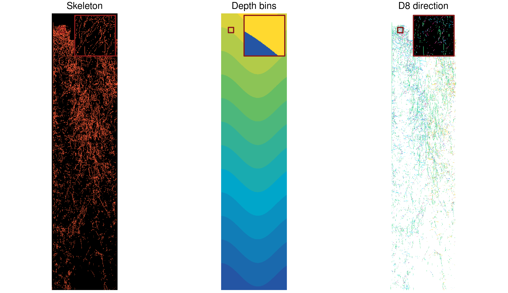
graphics::par(op)Zero degrees is up and the angle runs clockwise, so 180 is straight
down the depth axis and 90 and 270 run around the circumference. A tube
at 45 degrees puts most of the deepest-direction mass between 135 and
225, and the fraction agreeing with it is the number
deep_drive() returns.
Rotation bias and circumferential pattern
Part I censored the rotation. The same slicing answers a second
question: are roots spread evenly around the tube, or concentrated on
one side? slice_rotation() cuts the image into bands of
rows in rotation order, and a trait measured per band becomes a sequence
indexed by circumferential position.
# Trim the shallowest quarter of the depth axis (columns), where the tape and
# the noisiest soil sit. The rotation axis is left whole, since that is what the
# slices below are cut along.
e <- terra::ext(root_layer)
rot_layer <- terra::crop(root_layer,
terra::ext(e[1] + e[2] / 4, e[2], e[3], e[4]))
terra::plot(rot_layer, maxcell = Inf)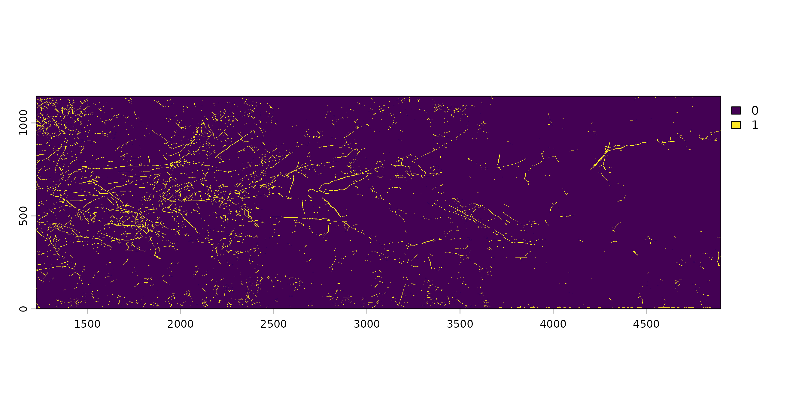
# create circumferential zones
n_slices <- 48
slices <- slice_rotation(rot_layer, n_slices)
# tallies from the binary mask: roots = 1, soil/background = 0
n_root <- function(s) {
v <- terra::values(s, mat = FALSE); sum(v > 0, na.rm = TRUE)
}
n_soil <- function(s) {
v <- terra::values(s, mat = FALSE); sum(v == 0, na.rm = TRUE)
}
slice_traits <- data.frame(
slice = seq_len(n_slices),
rootlen = sapply(slices, root_length, unit = "cm", dpi = dpi,
show_messages = FALSE), # cm
rootpx = sapply(slices, n_root),
soilpx = sapply(slices, n_soil)
)
# root length per observed area (root + soil pixels)
slice_traits$rld <- slice_traits$rootlen /
((slice_traits$rootpx + slice_traits$soilpx) *
(2.54 / dpi)^2)rhythmicity() fits
amplitude * sin(2*pi/period * (x + phase)) + offset and
tests whether the amplitude differs from zero. The fit is a
Levenberg-Marquardt least squares solve from
minpack.lm, and the amplitude tests follow the
likelihood-based rhythmicity tests of diffCircadian (Ding et
al. 2021): method = "F", "LR" and
"Wald" are the three tests that package distinguishes.
Fixing the period to the number of slices means one full turn of the
tube, so a significant amplitude says root abundance varies
systematically with circumferential position. Nothing in the fit is
specific to time: this is a spatial use of a tool normally introduced
for time series, and res$peakTime is a slice index rather
than a time.
res <- rhythmicity(
x = slice_traits$slice,
y = slice_traits$rld,
fix_period = n_slices,
method = "F"
)
cat(sprintf("Mean %.4f | Amplitude %.4f | Phase %.2f | R2 %.3f | p %.4f\n",
res$offset, res$amplitude, res$phase, res$R2, res$p_value))
#> Mean 4.9233 | Amplitude 1.8943 | Phase 39.56 | R2 0.650 | p 0.0000
# Smooth fitted sine over the slice index
fit_df <- data.frame(slice = seq(1, n_slices, length.out = 200))
fit_df$rld <- res$amplitude *
sin(2 * pi / n_slices * (fit_df$slice + res$phase)) +
res$offset
ggplot(slice_traits, aes(slice, rld)) +
geom_point(color = "gray50") +
geom_line(data = fit_df, color = "coral", linewidth = 1) +
geom_hline(yintercept = res$offset, color = "gray40", linetype = 3) +
annotate("segment", x = res$peakTime, xend = res$peakTime,
y = res$offset, yend = res$offset + res$amplitude,
linetype = 2, color = "gray40") +
annotate("text", x = Inf, y = Inf, hjust = 1.05, vjust = 1.5,
label = sprintf("A = %.4f, R2 = %.3f, p = %.4f",
res$amplitude, res$R2, res$p_value)) +
theme_minimal() +
labs(x = "Circumferential slice (1 = top, going around the tube)",
y = "Root Length Density (cm / cm2)",
title = "Root distribution around tube circumference")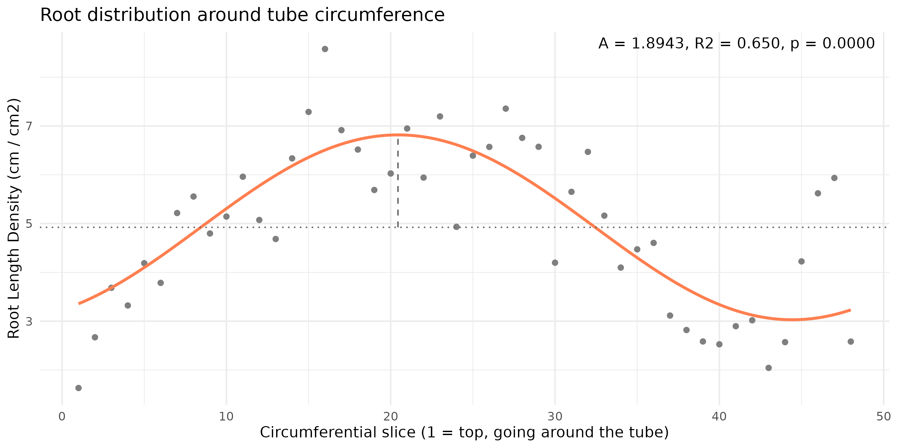
# cross section view
inner <- 6
ggplot(slice_traits, aes(slice, rld + inner)) +
geom_col(fill = "steelblue") +
coord_polar(start = pi) +
xlab("") + ylab("") +
ggtitle("Circumferential Root Length Distribution") +
theme_light() +
theme(axis.text = element_blank()) +
annotate("rect", xmin = -Inf, xmax = Inf, ymin = 0, ymax = inner,
fill = "white", color = NA)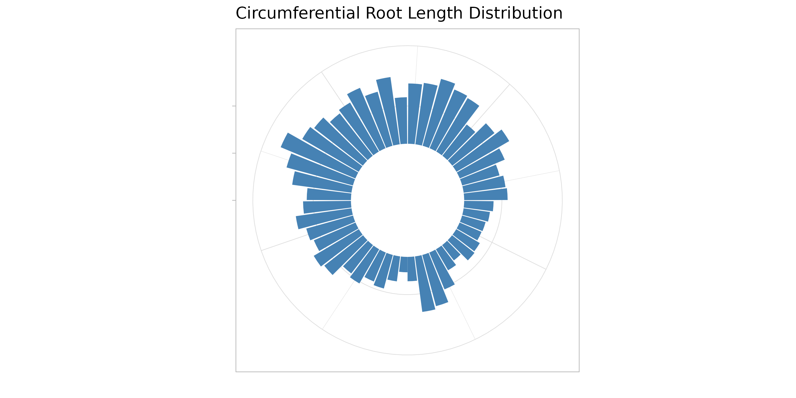
A significant, non-trivial amplitude means more root material on one
side of the tube than the other – from gravitropism, from light reaching
one face of the installation, or from the installation angle itself.
estimate_rotation_center() and
estimate_rotation_shift() locate the rotational zero and
the offset between sessions.
Comparing depth profiles
Two profiles can differ in two ways that are worth keeping apart: the
same root sitting at a different depth, or a different amount of root at
the same depth. The earth-mover idea measures the first.
Distance here means depth: how far down the profile the
root mass would have to be carried, in centimeters, to turn one profile
into the other. It is unrelated to root_transport(), which
measures water movement through a root network. A profile shifted 35 cm
costs more than one shifted 10 cm, and a profile of a different shape
costs whatever rearranging it takes.
In one dimension that has an exact picture. Plot each profile as the cumulative share of total root length from the surface down, and the area between the two curves is that distance. At any depth the horizontal gap between the curves is the share of root that has to cross that depth; adding it up down the profile gives the total, in centimeters.
z <- seq(0, 60, by = 5) # 13 intervals, 5 cm each
# A surface-weighted reference, with no mass below 25 cm. Keeping the support
# in the upper half of the grid matters: a profile shifted past the bottom of
# the grid loses the mass that falls off, and renormalizing what is left
# changes its shape, so it is no longer the same profile moved down.
p0 <- exp(-abs(z - 10) / 7)
p0[z > 25] <- 0
reference <- p0 / sum(p0)
# Move the whole profile down by k intervals.
shift_by <- function(p, k) c(rep(0, k), head(p, length(p) - k))
shifted10 <- shift_by(reference, 2) # 2 intervals = 10 cm
shifted35 <- shift_by(reference, 7) # 7 intervals = 35 cm
even <- rep(1 / length(z), length(z)) # equal root in every interval
# A two-layer profile: a surface mode and a second one at 45 cm. The weight on
# the deep mode is solved so this profile has exactly the reference's mean
# rooting depth -- same center of mass, different shape.
shallow <- exp(-z / 5); shallow[z > 15] <- 0
deep <- exp(-abs(z - 45) / 7); deep[z < 30] <- 0
shallow <- shallow / sum(shallow)
deep <- deep / sum(deep)
mean_depth <- function(p) sum(z * p)
w <- (mean_depth(reference) - mean_depth(shallow)) /
(mean_depth(deep) - mean_depth(shallow))
bimodal <- (1 - w) * shallow + w * deep
# Distance in centimeters of depth: the area between the two cumulative
# curves, measured down the depth axis. This is what
# compare_depth_distribution(metric = "wasserstein") returns.
emd_cm <- function(a, b) sum(abs(cumsum(a) - cumsum(b))) * diff(z)[1]
compare_panel <- function(b, label_b, title) {
Fa <- cumsum(reference)
Fb <- cumsum(b)
plot(NA, xlim = c(0, 1), ylim = rev(range(z)),
xlab = "cumulative share", ylab = "depth (cm)", main = title)
graphics::polygon(c(Fa, rev(Fb)), c(z, rev(z)), col = "grey88",
border = NA)
graphics::lines(Fa, z, col = "steelblue4", lwd = 2)
graphics::lines(Fb, z, col = "coral3", lwd = 2)
graphics::legend("bottomright", bty = "n", lwd = 2, cex = 0.8,
col = c("steelblue4", "coral3"),
legend = c("reference", label_b))
graphics::mtext(sprintf("%.1f cm to move", emd_cm(reference, b)),
side = 3, line = -1.3, cex = 0.75)
}
op <- graphics::par(mfrow = c(2, 2), mar = c(4, 4, 3, 1))
compare_panel(shifted10, "10 cm deeper", "same shape, 10 cm down")
compare_panel(shifted35, "35 cm deeper", "same shape, 35 cm down")
compare_panel(even, "equal at all depths", "spread evenly")
compare_panel(bimodal, "two layers", "same mean depth, other shape")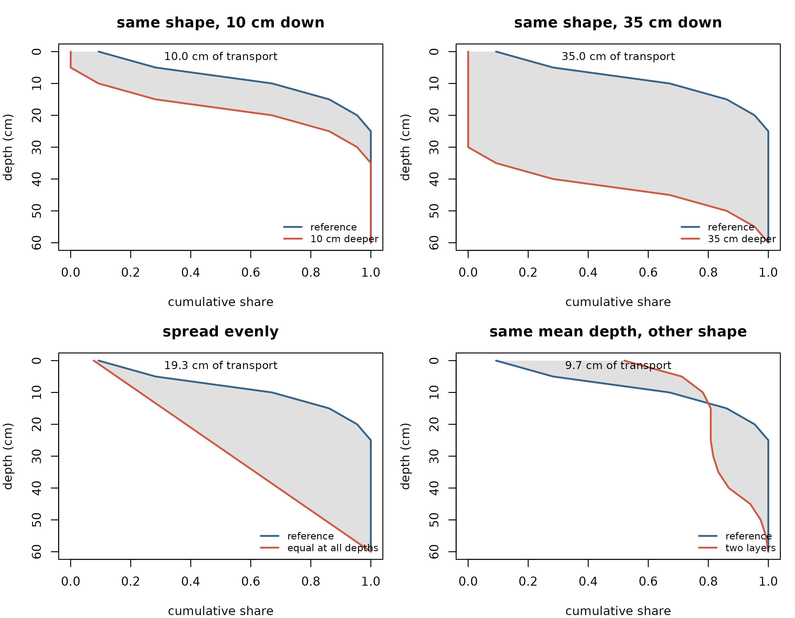
graphics::par(op)The first two panels hold the same root in the same shape and differ only in how far down it sits, so the band widens in proportion – and they are the check on the metric: a profile moved down by a fixed distance has to return that distance, and 10 cm and 35 cm are what the shaded areas measure. The third holds the same amount of root in every interval instead of peaking near the surface, so its cumulative curve is a straight line: the band is a different shape rather than simply wider, because the mass has to be spread out as well as moved. There is no shift to report for it, and its 19.3 cm is what rearranging one profile into the other costs.
The fourth panel is the one to read twice. It holds a two-layer profile – a surface mode and a second one at 45 cm – with the weight on the deep mode solved so that its mean rooting depth is exactly the reference’s.
c(reference = mean_depth(reference), bimodal = mean_depth(bimodal))
#> reference bimodal
#> 10.68323 10.68323
emd_cm(reference, bimodal)
#> [1] 9.669479MRD() reports no difference at all between these two
stands. The distance is 9.7 cm, and every centimeter of it is shape.
The curves show why. In the first three panels they never cross: one profile is deeper than the other at every depth, all the root travels the same way, and the distance comes out equal to the difference in mean rooting depth – 10, 35 and 19.3 cm. In the fourth they cross, because the bimodal profile holds more root than the reference near the surface and more again at depth. Mass has to move up as well as down; the two directions cancel in the mean and add in the distance. Crossing cumulative curves are the visual test for a difference that mean rooting depth cannot see.
compare_depth_distribution() is the function for this,
with metric = "wasserstein" (default), "js" or
"kl", and optional tail weighting so deep layers can count
for more than shallow ones. Jensen-Shannon and Kullback-Leibler compare
bin by bin and have no notion that one bin is adjacent to another, so
two profiles that do not overlap score much the same whether they are 10
cm or 50 cm apart.
The shaded areas above and the function agree: with
index giving the depth of each bin,
compare_depth_distribution() returns the mass-weighted mean
distance the root has to travel, so a profile shifted 10 cm returns 10.
Interpreting it needs two things kept in mind. The profiles are
normalized, so total root amount divides out – a tube with ten times the
root but the same depth distribution scores 0, and abundance has to be
reported separately. And the value is bounded below by the difference in
mean rooting depth: two tubes 3 cm apart in MRD() are at
least 3 cm apart here. That bound is tight whenever the cumulative
curves do not cross, which is the ordinary case for a profile that
simply deepened. What is informative is the gap: a distance well above
the difference in mean depth means root moved both up and down, so the
shapes differ and not just the center of mass. The two-layer panel above
is that case taken to its limit – the difference in mean depth is zero
and the whole distance is shape.
Turnover between sessions
Two methods, for two kinds of input, answering different questions.
data(skl_Oulanka2023_Session01_T067)
t1 <- load_flexible_image(skl_Oulanka2023_Session01_T067,
output_format = "spatrast")
t2 <- load_flexible_image(skl_Oulanka2023_Session03_T067,
output_format = "spatrast")
root_turnover(img1 = t1, img2 = t2, method = "tc", tc_method = "kimura",
dpi = dpi, unit = "cm")
#> standingroot_t1 standingroot_t2 production newroot.per_t1 newroot.per_t2
#> 1 17875.84 16835.23 -1040.613 -0.0582 -0.0618Temporal comparison measures root amount in each image and takes the difference, so it sees only the net change: root that grew and died between the two scans is invisible to it.
data(TurnoverDPC_data)
dpc <- load_flexible_image(TurnoverDPC_data, output_format = "spatrast",
scale = "none")
root_turnover(dpc, method = "dpc")
#> tape constant production decay newgrowth.ratio decay.ratio constant.ratio
#> 1 887012 438681 2770138 3355722 0.8633 0.8844 0.0668Decay-production-constant decomposes a single three-layer image in
which a segmenter has already color-coded each pixel as produced,
decayed or unchanged, which resolves gross change instead.
include_virtualroots switches the denominator between
“present at this time point” and “present at any time point”, and the
choice changes the ratios.
Soil color, texture, and the rhizosphere
Everything that reads the color channels rather than the root shape.
classify_soil_rgb() assigns every pixel to a material class
by nearest-centroid matching in CIE LAB, leaving pixels too far from any
centroid unclassified rather than forcing them into the nearest
class.
# downsample_fact speeds up the demo; drop it for full resolution
result <- classify_soil_rgb(rgb, downsample_fact = 4, verbose = FALSE)
# A SpatRaster of class IDs (factor levels are the class names)
zoom_plot(result$map, main = "Soil classification")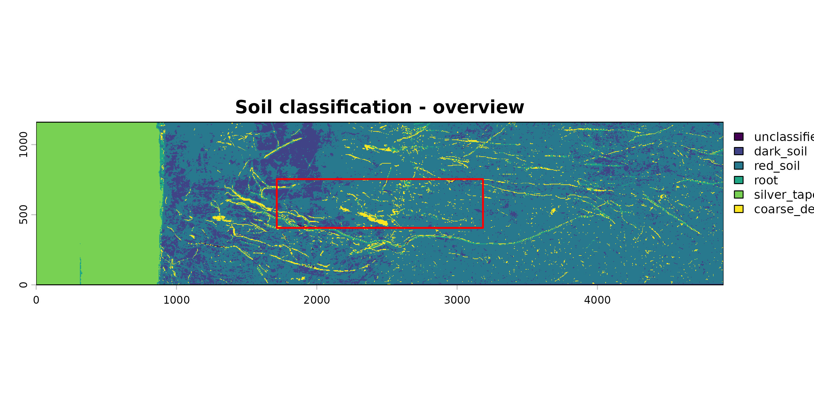
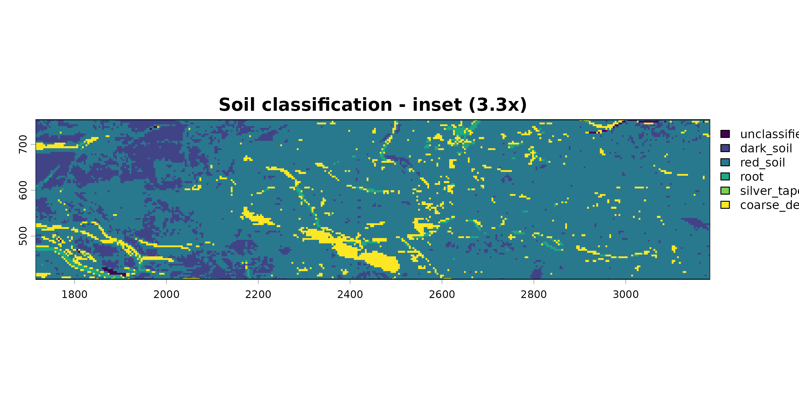
result$metrics
#> class n_pixels pct_pixels L_mean A_mean B_mean L_sd A_sd B_sd R_mean
#> 1 dark_soil 10090 2.840 7.7 1.5 2.2 4.25 1.76 1.66 25.3
#> 2 red_soil 215969 60.794 16.0 5.2 6.2 3.67 2.49 2.68 50.0
#> 3 root 15043 4.234 32.2 6.1 9.4 6.43 3.52 5.61 90.5
#> 4 silver_tape 60624 17.065 87.0 0.1 0.3 4.81 0.97 2.02 218.4
#> 5 coarse_debris 48835 13.747 22.5 8.2 10.2 3.47 2.48 2.95 70.2
#> 6 unclassified 4689 1.320 85.2 3.2 4.6 24.31 7.19 9.70 221.8
#> G_mean B_mean_rgb mean_dist_to_centroid hex_actual
#> 1 20.7 18.1 6.14 #1A1614
#> 2 37.0 31.2 5.04 #32251F
#> 3 72.1 61.2 9.49 #5A483D
#> 4 218.0 217.5 21.13 #DADAD9
#> 5 49.0 39.1 6.33 #463127
#> 6 213.1 207.9 NA #DFD3CC
plot_soil_classification(result)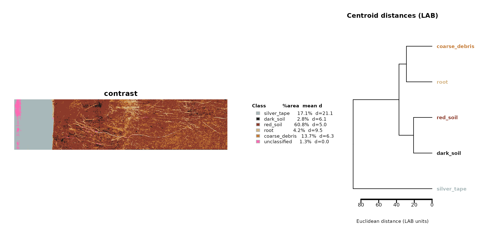
The returned list carries per-class statistics: pixel counts, area
fractions, mean LAB and RGB colors, and the mean distance to the
centroid. Watch the unclassified fraction – a high value means the
shipped centroids do not match your scanner, and
build_soil_centroids() derives your own from color picks.
plot_soil_classification() is the figure to read it from:
the class map, a legend in dendrogram order, and a dendrogram of
inter-class LAB distances, so you can see which classes sit close enough
together to be confused. color_mode switches the palette:
"contrast" is the default and the one used here,
"vibrant" saturates it, and "centroid" paints
each class in its own measured mean color – which looks faithful but
puts several soil classes in nearly the same red-brown, so it is the
hardest of the three to read.
Texture is delegated: analyze_soil_texture() converts
the band to a raster object and calls
glcm, which computes the grey-level co-occurrence
matrices and their statistics. grays sets the quantization
level and window the moving window; both are glcm’s
arguments, passed straight through.
tex <- analyze_soil_texture(
rgb,
grays = 12,
window = c(5, 5),
metrics = c("variance", "second_moment", "correlation", "entropy")
)
terra::plot(tex)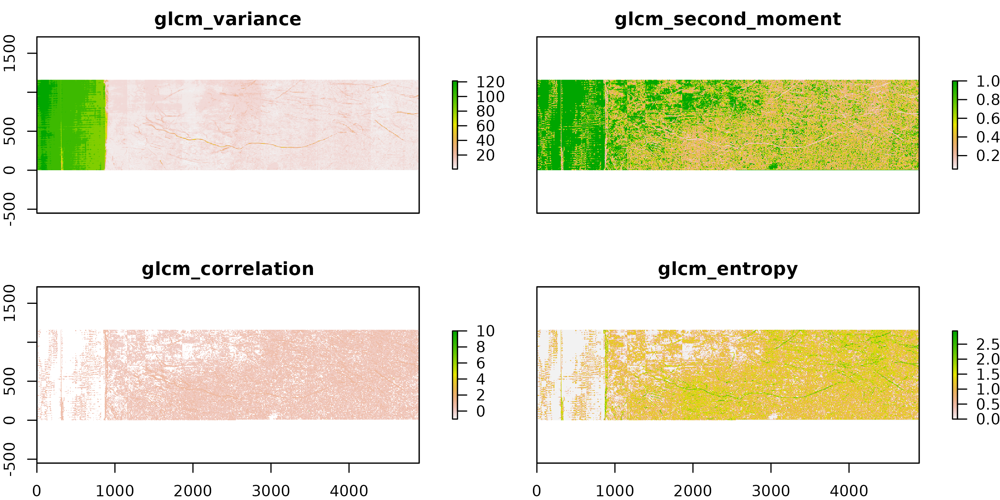
tube_coloration(rgb)
#> rcc gcc bcc hue saturation luminosity red green
#> 1 0.4159 0.3148 0.2692 0.05310162 0.2060137 0.2943 0.3325954 0.2859071
#> blue
#> 1 0.2640762create_root_buffer() grows a buffer around every root
pixel, a simple proxy for the rhizosphere. With
halo_only = TRUE it returns the ring alone.
halo <- create_root_buffer(root_layer, width = 3, halo_only = TRUE,
kernel = "circle")
zoom_plot(halo, main = "Rhizosphere halo (width 3)", frac = 0.1)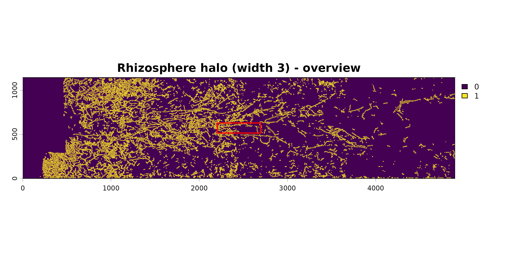
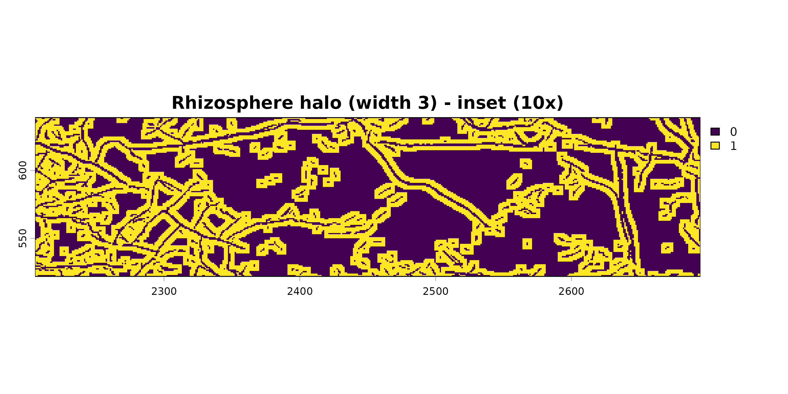
halo10 <- create_root_buffer(root_layer, width = 10, halo_only = FALSE,
kernel = "circle")
zoom_plot(halo10, main = "Roots + halo (width 10)", frac = 0.25,
overview = FALSE)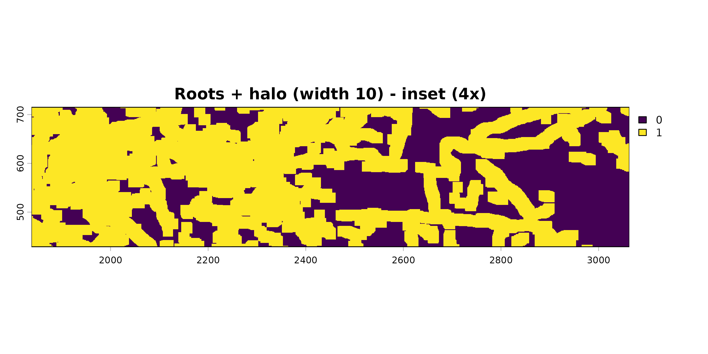
kernel switches between a "circle"
(8-neighbor) and a "diamond" (4-neighbor) growth shape, and
width is the number of dilation iterations.
Flatbed scans: the same traits without a depth axis
A flatbed scan of washed roots is the other geometry the package serves, and it is a special case rather than a different pipeline: the same cleaning, skeleton, length and diameter functions apply, and only the depth axis goes away. Where a root lies on the tray says nothing about where it grew, so the whole scan is one observation.
What that buys is architecture. A washed root system is complete and unoccluded, so the branching graph is worth building on a flatbed scan in a way it rarely is on a tube, where roots enter and leave the field of view.
data(flatbed_scan_example)
seg_fb <- load_flexible_image(flatbed_scan_example, output_format = "spatrast",
scale = "binary", select_layer = 2)
# The top edge of the scan carries the tray rim rather than root, and a rim
# touching the mask joins otherwise separate roots into one component, which
# changes the base each path is measured from. Drop it before anything is
# traced.
e <- terra::ext(seg_fb)
seg_fb <- terra::crop(seg_fb, terra::ext(e[1], e[2], e[3],
e[4] - 0.05 * (e[4] - e[3])))
fb_clean <- clean_image(seg_fb,
fill_holes_upto = 50,
drop_objects_upto = 50,
protect_border = FALSE)
fb_skl <- skeletonize_image(fb_clean, verbose = FALSE)
# The order map is built on the unpruned skeleton. Pruning removes the short
# terminal branches, and those are exactly the segments that carry the highest
# orders, so pruning first flattens the very classification being shown.
# `prune_skeleton()` is still the right call before counting tips, and
# `prune_terminal_segments()` prunes inside the graph if you want both.
fb_skl_pruned <- prune_skeleton(fb_skl, mask = fb_clean, min_length = 50,
iter = 1)
# The segment graph over a whole tray is the slowest step in this article.
order_res <- branch_order_map(
skel = fb_skl,
mask = fb_clean, # the mask is what supplies diameters
order = "order_from_base",
unit = "cm",
dpi = 1200
)
#> Cropped to 1900x1964 (offset 0,36)
#> Distance transform...
#> Tracing + contracting junctions...
#> 111 segment(s)
#> spliced pass-through nodes: 111 -> 111 segment(s)
#> resolved crossings: 111 -> 111 segment(s)
#> Tip order...
#> Done in 0.33s. 111 segments, max order 8, total length 7857.9 px
# The same window before and after cleaning, so the specks that
# drop_objects_upto removes and the pinholes that fill_holes_upto closes can
# be compared rather than described.
zoom_plot(seg_fb, main = "Segmented, as it comes", center = c(0.6, 0.7),
overview = FALSE)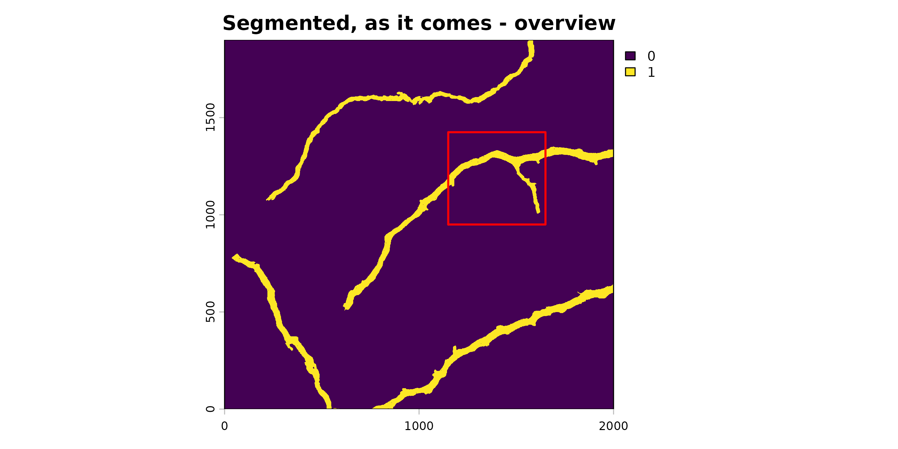
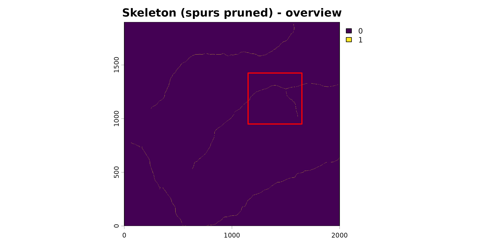
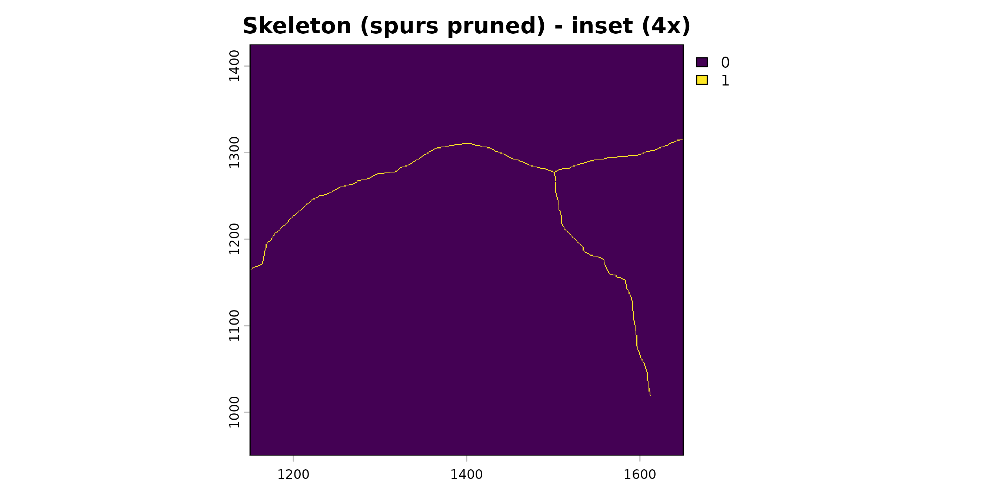
A one-pixel class map plotted whole is unreadable: the lines are a
pixel wide and a continuous palette on a white page gives them almost no
contrast. render_order_overlay() is the function for
looking at it – it paints the per-segment value back onto the
mask, so each root is drawn at its own width, and picks
a labeled swatch per class when the values are a handful of small
integers.
# render_order_overlay() writes the figure with grDevices::png(), which can
# emit a palette image; terra then reads it as a single band of palette
# indices rather than three color bands. png::readPNG() expands the palette,
# so build the raster from that array and zoom_plot() it like any other image.
as_rgb_rast <- function(file) {
a <- png::readPNG(file) # values in 0-1
if (length(dim(a)) == 2L) a <- array(a, c(dim(a), 3L))
r <- terra::rast(a[, , 1:3, drop = FALSE] * 255)
terra::RGB(r) <- 1:3
r
}
ord_png <- tempfile(fileext = ".png")
render_order_overlay(attr(order_res$edges, "segments"),
order_res$edges$order_from_base,
attr(order_res$edges, "dims"), ord_png,
mask = fb_clean, value_label = "order from base")
zoom_plot(as_rgb_rast(ord_png), frac = 0.25, center = c(0.6, 0.7), maxcell = Inf,
main = "Order from base")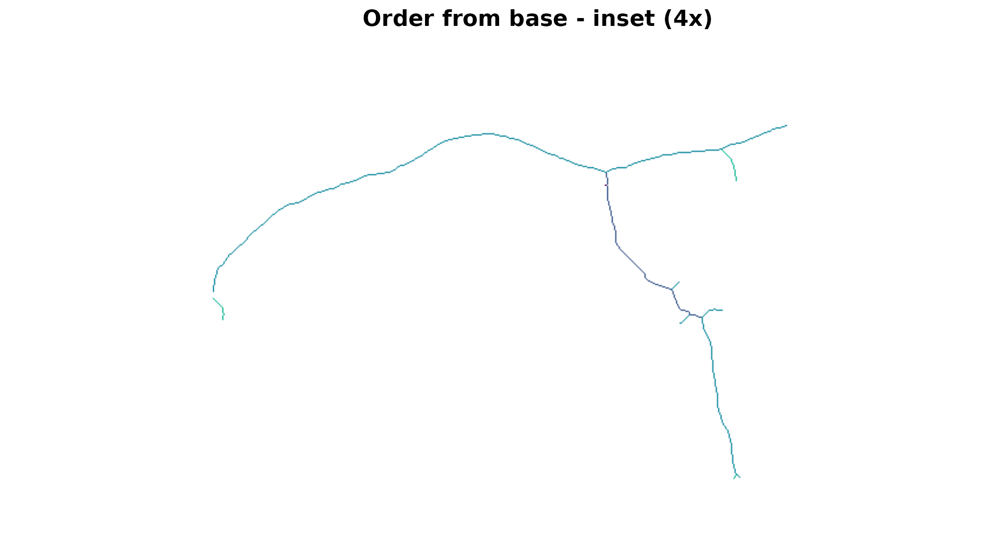
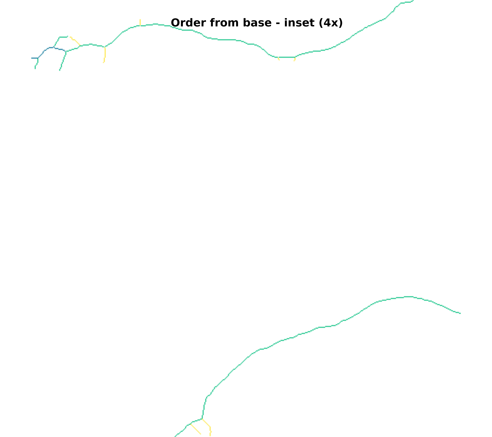
plot_order_window() is the one figure that is not a
zoom_plot(), because it draws two things that are not in
any single raster: the skeleton and, over it, the segments the graph
actually traced.
To check the tracing itself rather than the orders,
plot_order_window() renders a chosen rectangle at native
resolution and magnified, with no downsampling at all. It draws the
skeleton in gray and the traced, ordered segments in color on top, so
bare gray is skeleton the graph missed – which is the
check to run when a number looks wrong.
win_png <- tempfile(fileext = ".png")
plot_order_window(order_res$edges, fb_skl,
r_range = c(600, 1000), c_range = c(900, 1300),
scale = 2, file = win_png,
order_col = "order_from_base")
if (requireNamespace("png", quietly = TRUE)) {
op <- graphics::par(mar = c(0, 0, 0, 0))
plot(grDevices::as.raster(png::readPNG(win_png)))
graphics::par(op)
}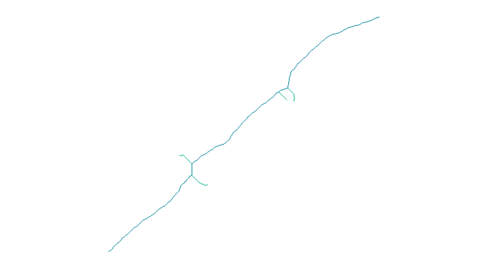
order = "order_from_base" counts generations outward:
the thickest, most central path of each connected component is order 1,
its branches are 2, theirs 3. Three other schemes are computed at the
same time and kept in order_res$edges; two count inward
from the tips per segment, two describe a whole continuous root. The
scheme has to be named because root ecology uses “order” in both
directions.
order_res$summary
#> order n_segments n_tips n_branch_points total_length cumulative_length
#> 1 1 26 6 22 5.16391097 5.163911
#> 2 2 38 25 13 3.30586934 8.469780
#> 3 3 27 15 14 4.75573400 13.225514
#> 4 4 14 12 2 0.71618856 13.941703
#> 5 5 4 2 2 1.91089531 15.852598
#> 6 6 2 2 0 0.04935045 15.901949
#> cumulative_fraction mean_segment_length branching_frequency mean_diameter
#> 1 0.3247345 0.19861196 4.260337 0.06893584
#> 2 0.5326253 0.08699656 3.932400 0.04545475
#> 3 0.8316914 0.17613830 2.943815 0.06355430
#> 4 0.8767292 0.05115633 2.792561 0.04367593
#> 5 0.9968966 0.47772383 1.046630 0.04563837
#> 6 1.0000000 0.02467522 0.000000 0.03223201
#> median_diameter
#> 1 0.06845654
#> 2 0.04095795
#> 3 0.04190786
#> 4 0.03722479
#> 5 0.03825043
#> 6 0.03160465
# The thickest order class against everything else, picked by diameter rather
# than by order number, so the same call means the same thing across a dataset.
order_metrics(order_res, groups = "thickest")
#> group orders n_segments n_tips n_branch_points total_length
#> 1 thickest 1 26 6 22 5.163911
#> 2 rest 2,3,4,5,6 85 56 31 10.738038
#> length_fraction mean_segment_length branching_frequency mean_diameter
#> 1 0.3247345 0.1986120 4.260337 0.06893584
#> 2 0.6752655 0.1263299 2.886933 0.05332406
#> median_diameter
#> 1 0.06845654
#> 2 0.03993719Tips and branch points come from this table too: n_tips
and n_branch_points per segment, summed per order class in
$summary.
diam_fb <- root_diameter(fb_clean, skeleton_img = fb_skl_pruned,
unit = "cm", dpi = 1200, select_layer = NULL)
diam_vals <- diam_fb$diameters # the per-skeleton-pixel values
cat(sprintf("diameter mean %.4f cm | sd %.4f | max %.4f cm\n",
mean(diam_vals), stats::sd(diam_vals), max(diam_vals)))
#> diameter mean 0.0618 cm | sd 0.0164 | max 0.1108 cm
ggplot(data.frame(diameter = diam_vals), aes(x = diameter)) +
geom_histogram(bins = 24, fill = "steelblue4", color = "white") +
theme_minimal() +
labs(x = "Diameter (cm)", y = "Count",
title = "Root diameter distribution")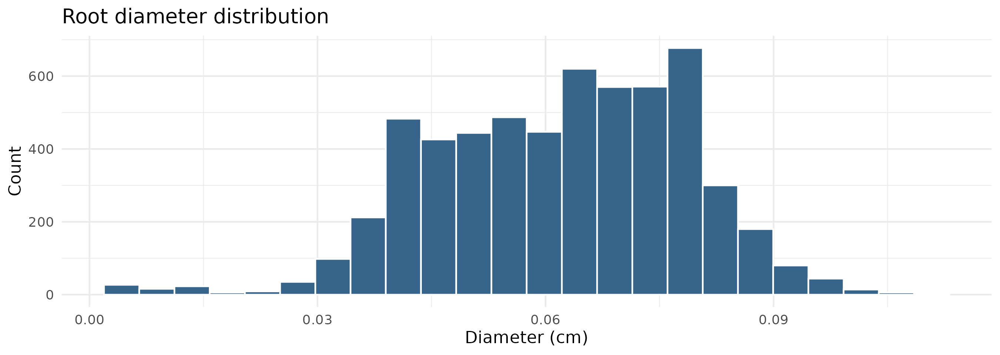
A diameter distribution is where fine and coarse roots separate, and
modal_peaks() finds the modes in it, optionally refining
them with a Gaussian mixture via mclust.
Network shape and transport
Two questions the segment table answers once it exists, both working
on order_res$edges rather than on the image.
net <- network_metrics(order_res$edges, topology = "projected_tree")
net$traits
#> $n_nodes
#> [1] 115
#>
#> $n_edges
#> [1] 111
#>
#> $n_components
#> [1] 4
#>
#> $n_tips
#> [1] 62
#>
#> $n_branch_points
#> [1] 53
#>
#> $tip_ratio
#> [1] 0.5391304
#>
#> $beta
#> [1] 0.9652174
#>
#> $total_length
#> [1] 15.90195
#>
#> $mean_edge_length
#> [1] 0.1432608
net$qc
#> $cyclomatic
#> [1] 0
#>
#> $alpha_meshedness
#> [1] 0
#>
#> $gamma
#> [1] 0.3274336
#>
#> $n_self_loops
#> [1] 0
#>
#> $n_duplicate_edges
#> [1] 0
#>
#> $is_forest
#> [1] TRUE
#>
#> $artefact_cycles
#> [1] 0
#>
#> $artefact_rate
#> [1] 0
net$note
#> [1] "loops in a projected tree are crossings the segmentation did not separate; artefact_rate divides that count by network length, in whatever unit the edge table carries, so images can be compared"$traits is the shape of the network: node and edge
counts, how many separate pieces, how many tips, the tip ratio, and
beta – edges per node, which is the plainest measure of how
branchy a network is. $qc holds the loop arithmetic. The
same numbers land in one place or the other depending on the
topology you declare, and nothing else changes:
topology |
What a loop means | Where loop counts go |
|---|---|---|
"tree" |
impossible |
$qc: any loop means the input is not a tree |
"projected_tree" |
crossings in projection |
$qc: unresolved overlaps |
"reticulate" |
real, e.g. mycelium |
$traits: a measurement |
On a root scan a closed circuit is almost never one the plant grew;
it is two roots crossing in front of one another, touching in the image,
joined by the skeleton. So artefact_cycles counts them and
artefact_rate divides by total network length, which makes
the count comparable between a large root system and a small one.
Reporting that as biology is the mistake the argument exists to prevent
– which is also why "reticulate" is there: for mycelium
with anastomoses, leaf venation or a stream network, the loops
are the structure, and cyclomatic and
alpha_meshedness move into $traits.
et <- root_transport(order_res$edges)
head(et[, c("length", "path_length", "path_resistance",
"downstream_tips", "downstream_length")], 4)
#> length path_length path_resistance downstream_tips downstream_length
#> 1 0.04264472 2.221137 6827712 1 0.04264472
#> 2 0.04009685 2.218590 6929970 1 0.04009685
#> 3 0.18486079 2.178493 6337904 2 0.26760236
#> 4 0.04135668 2.034989 6777683 1 0.04135668root_transport() picks the thickest loose end of each
separate piece as the base, which on a scan is the proximal end, and
measures outward from there. Resistance is the Hagen-Poiseuille term, so
it scales with the fourth power of radius: halving a root’s diameter
makes the same length roughly sixteen times harder to push water
through. Treat it as a relative ranking rather than a physical
measurement.
render_order_overlay() paints any per-segment column
back onto the mask, which is how a transport quantity becomes legible.
It picks its own legend: a handful of small integers gets one labeled
swatch per class, anything continuous gets a color ramp with a scale
bar.
png_file <- tempfile(fileext = ".png")
# max_side caps the longest side of the written PNG, and anything below the
# scan's own width throws pixels away: thin roots drop out rather than getting
# thicker. Keep it at the full width and zoom afterwards instead.
# A handful of thin distal segments carry resistance far above the rest, and a
# ramp stretched to that maximum leaves every other segment in nearly the same
# color. Capping the value at the 97th percentile spends the ramp on the range
# the roots actually occupy; the capped segments sit at the top color. The
# alternative is to paint log10(path_resistance) and label the bar as a log
# scale, which keeps the extremes distinguishable but makes the bar harder to
# read as a physical quantity.
cap <- stats::quantile(et$path_resistance, 0.97, na.rm = TRUE)
render_order_overlay(attr(et, "segments"),
pmin(et$path_resistance, cap),
attr(et, "dims"), png_file,
mask = fb_clean, max_side = 2000,
value_label = "path resistance (capped at p97)")
zoom_plot(as_rgb_rast(png_file), frac = 0.25, center = c(0.6, 0.7), maxcell = Inf,
main = "Path resistance")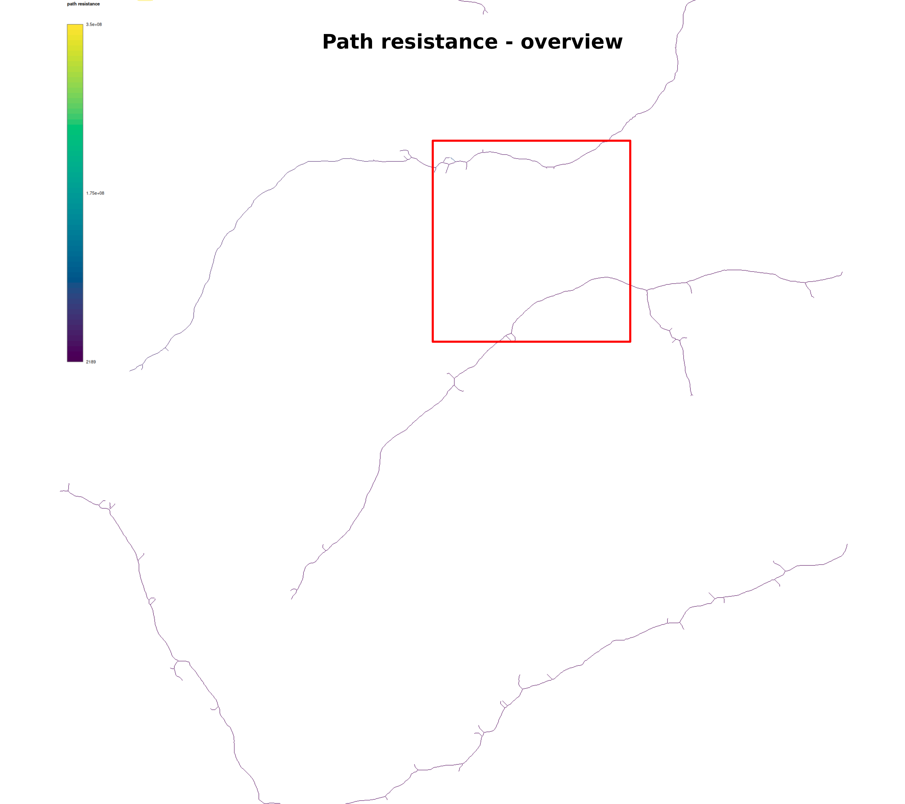
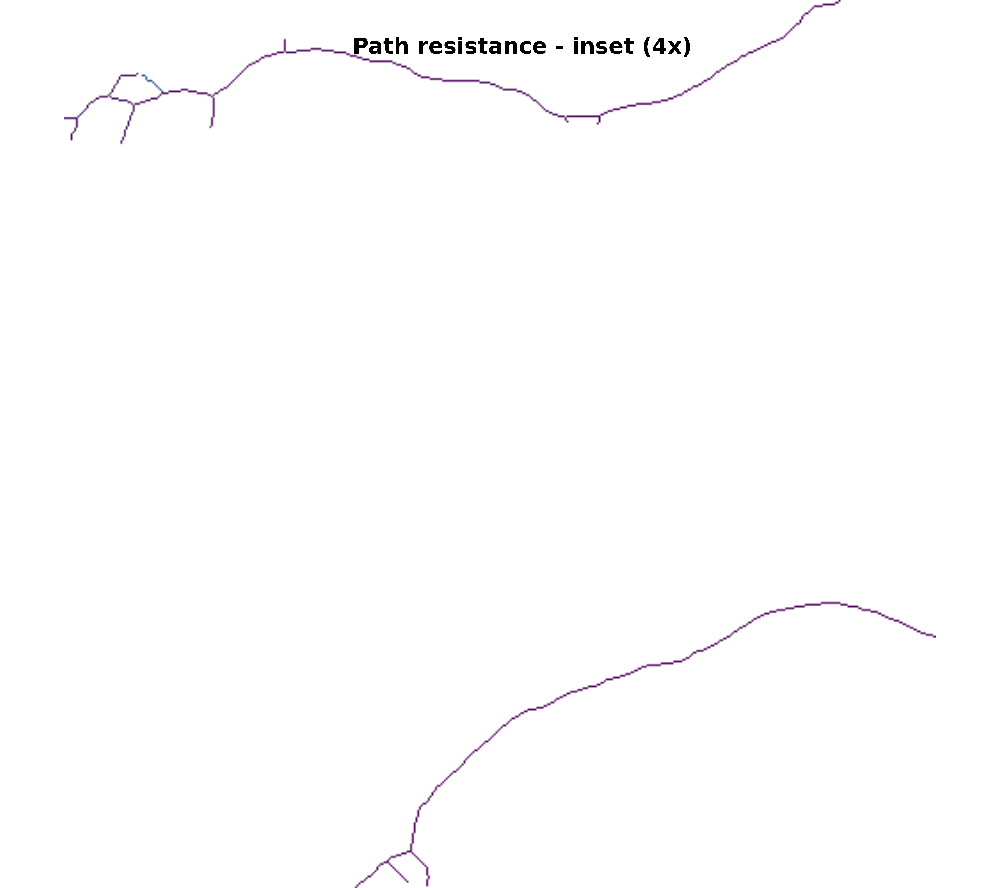
Segments with no value are drawn in red, which makes failures visible
rather than silently absent – a loop in the graph has no single
“beyond”, so its transport columns are NA and it shows up
in that color. A lot of red is the same signal
network_metrics() reports as
artefact_cycles.
Path length and path resistance rank the segments differently, and the reason is the radius term.
op <- graphics::par(mfrow = c(1, 2), mar = c(4, 4, 3, 1))
pt_bg <- grDevices::rgb(0.21, 0.35, 0.47, 0.45)
pt_cex <- 0.4 + 2.4 * et$mean_diameter / max(et$mean_diameter, na.rm = TRUE)
plot(et$path_length, et$path_resistance,
pch = 21, bg = pt_bg, col = "steelblue4", cex = pt_cex,
xlab = "path length from the base (cm)",
ylab = "path resistance (relative)",
main = "linear resistance axis")
plot(et$path_length, et$path_resistance, log = "y",
pch = 21, bg = pt_bg, col = "steelblue4", cex = pt_cex,
xlab = "path length from the base (cm)",
ylab = "path resistance (relative, log)",
main = "log resistance axis")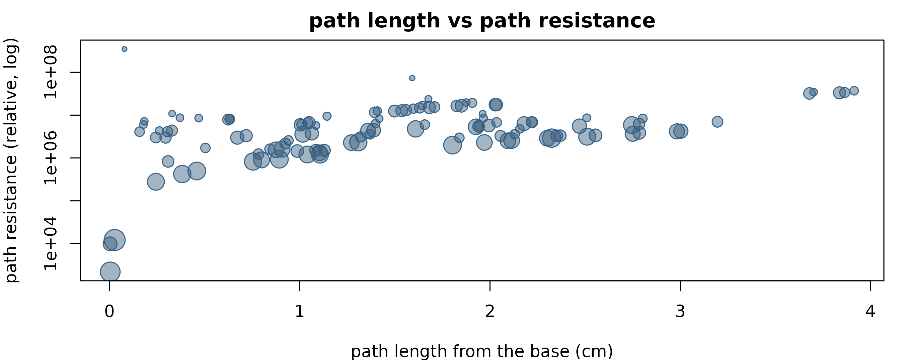
graphics::par(op)The pair is worth seeing. On the linear axis a few thin segments set the top of the range and everything else is squeezed into a band along the bottom, which says only that most segments are cheap and one or two are not. The log axis spreads the same points over the orders of magnitude they actually span, and the structure appears: at any given distance from the base, resistance varies by two or three orders of magnitude. It is the same problem the overlay has, solved there by capping the ramp instead.
Point size is diameter, and the small points – the thin roots – sit at the top. So a long thick root can be an easier path for water than a short thin one, which is why both columns are reported rather than one standing in for the other.
Reference
What you can measure
One row per quantity, with the unit it comes back in and what it
says. Lengths, diameters and depths follow unit and
dpi; the table assumes "cm".
Per image, or per depth interval
| Quantity | Unit | Meaning |
|---|---|---|
rootpx, voidpx
|
pixels | root and background pixel counts |
rootpx.density |
% | root pixels as a share of the interval |
rootlength |
cm | skeleton length, Kimura estimator |
rootlength.density |
cm cm^-2 | length per unit of imaged wall |
avg.diameter, max.diameter
|
cm | from 2x the distance transform |
var.diameter |
cm^2 | spread of diameter within the interval |
root.surface.area |
cm^2 | lateral area of the root cylinder |
root.volume |
cm^3 | volume of the same cylinder |
n.diameter.peaks |
count | modes in the diameter distribution |
rcc, gcc, bcc
|
fraction | chromatic coordinates, sum to 1 |
hue, saturation
|
0-1 | HSV of the mean color |
luminosity |
0-255 | Rec. 709 weighted mean |
Per tube or scan
| Quantity | Unit | Meaning |
|---|---|---|
mrd |
cm | mean rooting depth, amount-weighted |
total.length.density |
cm cm^-2 | summed over the profile |
rootlength.fraction |
fraction | share of total length in an interval |
deep_drive |
0-1 | share of root pixels heading deepest |
mean.steepness.angle |
degrees | 0 horizontal, 90 vertical |
| Wasserstein distance | cm | depth the mass must travel between profiles |
| Jensen-Shannon, KL | nats | bin-by-bin divergence, no depth metric |
amplitude, offset
|
trait units | circumferential sine fit |
peakTime |
slice index | where that sine peaks around the tube |
Per segment, from the branching graph
| Quantity | Unit | Meaning |
|---|---|---|
length |
cm | along the pixel chain, junction stub included |
mean_diameter |
cm | length-weighted within the segment |
order_from_tip, strahler_order
|
count | inward from the tips, per segment |
order_from_base |
count | generations outward, per root |
root_max_order_from_tip |
count | the root’s largest tip order |
n_tips, n_branch_points
|
count | degree-1 and degree-3+ nodes |
branching_frequency |
cm^-1 | branch points per unit length |
path_length |
cm | base of the root system to this segment |
path_resistance |
relative | 8 eta L / (pi r^4), eta = 1 |
downstream_length |
cm | root length beyond this segment |
downstream_tips |
count | tips beyond it |
downstream_surface |
cm^2 | root surface beyond it |
Per network
| Quantity | Unit | Meaning |
|---|---|---|
n_nodes, n_edges
|
count | graph size |
n_components |
count | separate root systems in the image |
tip_ratio |
fraction | tips over nodes |
beta |
edges/node | how branchy the network is |
cyclomatic |
count | independent closed circuits |
alpha_meshedness |
0-1 | loops against the planar maximum |
artefact_cycles |
count | the same, read as unresolved crossings |
artefact_rate |
cm^-1 | crossings per unit length, comparable |
Conventions
Four things are read the same way everywhere, and they are the ones to check before trusting a number.
-
Pixels to physical:
cm = px * 2.54 / dpi. Every function that reports a length needsdpi, androot_diameter()defaults to 300 rather than erroring. -
Angles:
angle_from_verticalandinsertion_anglesare degrees from vertical,[0, 90], 0 upright.mean.steepness.angleis degrees from horizontal. They are not the same convention. - Axes: depth runs along the image width, the tube circumference down the height. A scan with the soil surface at the top has to be turned a quarter turn first.
-
Depth zero:
start_soilandsoil_startsare centimeters, subtracted from every depth.estimate_soil_surface()reports pixels, so convert.
Two more are easy to misread. Diameter in the order summaries is
length-weighted, so mean_diameter describes the diameter of
the root length rather than the average of segment values. And the
Kimura length estimators are not additive, so depth intervals do not sum
to the whole-image value.
Packages this builds on
Rootopia is mostly glue and geometry. The numerical work is done by other packages, and knowing which one is behind a function tells you where to look when a result surprises you.
| Package | What Rootopia uses it for | Required? |
|---|---|---|
| terra | every raster: reading, extents, zonal(), plotting |
yes |
| imager | connected components, morphology, the distance transform behind
root_diameter()
|
yes |
| transport |
wasserstein1d(), the earth-mover distance in
compare_depth_distribution()
|
yes |
| minpack.lm | Levenberg-Marquardt fit in fit_sine_curve() /
rhythmicity()
|
yes |
| mclust | Gaussian mixture clustering in modal_peaks()
|
yes |
| glcm | the texture matrices in analyze_soil_texture()
|
yes |
| imagefx | phase and cross correlation in
estimate_rotation_shift()
|
yes |
| raster | the object type glcm and RStoolbox expect | yes |
| dplyr, tidyr, stringr | shaping the per-interval tables the wrappers return | yes |
| landscapemetrics | every metric in root_scape_metrics()
|
suggested |
| RStoolbox | unsupervised classification in estimate_soil_surface()
and estimate_rotation_center()
|
suggested |
| png, tiff | reading and writing those formats in stitching and overlays | suggested |
| ggplot2 | figures in the vignettes only | suggested |
A suggested package is not installed with Rootopia. The functions that need one check for it and stop with a message naming it rather than failing further in, so a thin install still runs the depth-profile workflow in Part I.
The method for rhythmicity() is not original here
either: it reproduces the likelihood-based rhythmicity tests of
diffCircadian (Ding et al. 2021) for a spatial axis instead of
a temporal one.
Availability
Rootopia is an R package, available from
https://github.com/jcunow/Rootopia and not yet on CRAN. It
requires R >= 4.1 for the native pipe and terra >=
1.8. help(package = "Rootopia") lists every exported
function with its arguments and return value, and further worked
examples ship with the package.
References
Ding H, Meng L, Liu AC, et al. (2021) Likelihood-based tests for detecting circadian rhythmicity and differential circadian patterns in transcriptomic applications. Briefings in Bioinformatics 22: bbab224. doi:10.1093/bib/bbab224
Freschet GT, Pagès L, Iversen CM, et al. (2021) A starting guide to root ecology. New Phytologist 232: 973-1122.
Kimura K, Kikuchi S, Yamasaki S (1999) Accurate root length measurement by image analysis. Plant and Soil 216: 117-127.
Peters B, Blume-Werry G, Gillert A, et al. (2023) RootDetector: a convolutional neural network for root detection. Scientific Reports 13: 1399.
Smith AG, Han E, Petersen J, et al. (2022) RootPainter: deep learning segmentation of biological images with corrective annotation. New Phytologist 236: 774-791.
Zhang TY, Suen CY (1984) A fast parallel algorithm for thinning digital patterns. Communications of the ACM 27: 236-239.
Software
Entries as citation() prints them, with the package
versions used here. Where a package names a paper or a book instead of
its manual, that is what is cited.
Barthelme S (2024) imager: Image Processing Library Based on ‘CImg’. R package version 1.0.2.
Elzhov TV, Mullen KM, Spiess A, Bolker B (2023) minpack.lm: R Interface to the Levenberg-Marquardt Nonlinear Least-Squares Algorithm Found in MINPACK, Plus Support for Bounds. R package version 1.2-4.
Hesselbarth MHK, Sciaini M, With KA, Wiegand K, Nowosad J (2019) landscapemetrics: an open-source R tool to calculate landscape metrics. Ecography 42: 1648-1657.
Hijmans R (2025) raster: Geographic Data Analysis and Modeling. R package version 3.6-31.
Hijmans R, Brown A, Barbosa M (2026) terra: Spatial Data Analysis. R package version 1.9-11.
Müller K, Schwalb-Willmann J, Wegmann M, Leutner B (2024) RStoolbox: an R package for remote sensing data analysis. Methods in Ecology and Evolution. doi:10.1111/2041-210X.14451
Schuhmacher D, Bähre B, Bonneel N, Gottschlich C, Hartmann V, Heinemann F, Schmitzer B, Schrieber J (2024) transport: Computation of Optimal Transport Plans and Wasserstein Distances. R package version 0.15-4.
Scrucca L, Fraley C, Murphy TB, Raftery AE (2023) Model-Based Clustering, Classification, and Density Estimation Using mclust in R. Chapman and Hall/CRC. doi:10.1201/9781003277965
Urbanek S (2022) png: Read and write PNG images. R package version 0.1-8.
Urbanek S, Johnson K (2023) tiff: Read and Write TIFF Images. R package version 0.1-12.
Wickham H (2016) ggplot2: Elegant Graphics for Data Analysis. Springer-Verlag, New York.
Wickham H (2025) stringr: Simple, Consistent Wrappers for Common String Operations. R package version 1.6.0.
Wickham H, François R, Henry L, Müller K, Vaughan D (2023) dplyr: A Grammar of Data Manipulation. R package version 1.1.4.
Wickham H, Vaughan D, Girlich M (2024) tidyr: Tidy Messy Data. R package version 1.3.1.
Witsil AJ (2020) imagefx: Extract Features from Images. R package version 0.4.1.
Zvoleff A (2020) glcm: Calculate Textures from Grey-Level Co-Occurrence Matrices (GLCMs). R package version 1.6.5.